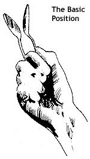

David Holt demonstrates several tricks of the spoons player's trade. CLOCKWISE FROM ABOVE LEFT: First, he knocks the utensils back and forth between his hand and his mouth! By varying the ""O"" formed by his lips, David can produce a whole range of musical tones .... The mountain musician next prepares to ""run"" the spoons down his shirt to produce an unusual drum roll effect .... In this novel crowd-pleaser, Mr. Holt has just finished hitting the two instruments against his left hand, left leg, right leg, and left foot! . . . The basic spoons roll involves banging the scoopers against the four digits-from index to pinky-of an outstretched hand .... David makes a ""galloping horses"" effect by curling the middle finger of his free hand under and hitting this digit on each downward stroke .... Hop's High-Flying Spoon Showstopper!